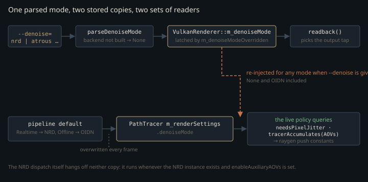

Monograph · Tree · ← Module hub · Denoise modes & traits
denoise
Denoise modes & traits
DenoiseMode enum + rt_meta's denoise policy functions.
Four values, numbered with gaps
`DenoiseMode` is the single token every part of the RT stack uses to say which denoiser is in play, and its enumerators are numbered explicitly and non-contiguously: `None` 0, `OIDN` 1, `NRD` 3, `DLSSRR` 5. Values 2 and 4 name nothing.
NRD = 3, // NVIDIA RayTracingDenoiser (Sub-plan 4)ohao/render/rt/denoise/denoise_types.hpp:16The gap costs nothing, because the numeric value never crosses a boundary: nothing packs a `DenoiseMode` into a push constant, writes it to a file, or casts an integer back into one. `denoiseModeIndex` is the only function that reads the underlying value at all, and it has no callers. The numbering is source hygiene, not an ABI.
The parser degrades instead of failing. `optix` parses to OIDN with a warning, and any name it does not know (`atrous` among them) parses to `None` with a warning, so a script that names an unavailable denoiser still runs:
OHAO_LOG(Warn, render, "Denoise: --denoise=optix is no longer supported — falling back to OIDN");ohao/render/rt/denoise/denoise_types.cpp:25OHAO_LOG(Warn, render, "Denoise: unknown mode '{}' — falling back to None", s);ohao/render/rt/denoise/denoise_types.cpp:45More importantly, `nrd` and `dlssrr` are gated on the build defines that decide whether those backends were compiled in at all; if they weren't, the string resolves to `None` rather than to a mode whose implementation is absent.
OHAO_LOG(Warn, render, "Denoise: --denoise={} requested but OHAO_DLSS=OFF at build time — falling back to None",ohao/render/rt/denoise/denoise_types.cpp:40What the fallback buys is mechanical. The mode decides how the trace accumulates, not only which pass runs after it: realtime NRD turns the running mean off and leaves the history to REBLUR. In a build without NRD the whole REBLUR-and-compose block is compiled out: {{cite ohao/render/rt/path_tracer_render.cpp "#ifdef OHAO_NRD_ENABLED"}} So an `NRD` mode reaching such a build would not error: the trace would stop accumulating and the frame's output would be one noisy sample every frame, with nothing filtering it. Degrading at parse time keeps a mode out of the tracer unless its backend exists.
What each denoiser asks of the trace
`rt_meta.hpp` states the per-mode requirements once, as plain `constexpr` functions of a `DenoiseMode` (or of a whole `RTRenderSettings`), usable both in constant expressions and on a mode that arrived from `argv`:
[[nodiscard]] constexpr bool denoiseNeedsMotionVectors(DenoiseMode m) noexcept {ohao/render/rt/rt_meta.hpp:20Each is a direct predicate: motion vectors for NRD and DLSS RR; the diffuse/specular split for NRD; a CPU readback for OIDN; sub-pixel jitter for NRD and DLSS RR. There is no `switch` with a `default:` arm and no trait class behind them, so a new enumerator answers `false` to every requirement until a predicate names it, and no diagnostic says so.
Two of the functions take the settings rather than the mode, because the answer depends on the profile as well:
[[nodiscard]] constexpr bool tracerAccumulates(const RTRenderSettings& s) noexcept {ohao/render/rt/rt_meta.hpp:36`tracerAccumulates` says whether the trace keeps its own running mean of the beauty. DLSS RR never lets it: it is temporal and carries the history itself, taking this frame's sample alone. NRD lets it only offline, where it denoises the mean of a still view's samples; realtime NRD reprojects its own history through the motion vectors. `None` and `OIDN` always accumulate. `tracerAccumulatesAOVs` is the matching question for NRD's five guide images: true only for offline NRD.
What the policy gates
Three answers reach the raygen inside the tracer's per-frame record, all as push-constant state rather than as pipeline selection. Sub-pixel jitter is the first: for `NRD` and `DLSSRR`, the tracer offsets the sample grid by a Halton(2,3) point each frame so the denoiser's temporal accumulation integrates a wider footprint than centre-sampling would.
if (denoiseNeedsPixelJitter(m_renderSettings.denoiseMode)) {ohao/render/rt/path_tracer_render.cpp:86The predicate names the two temporal denoisers. The else arm keeps `None` and `OIDN` on pixel centres, the stated reason being parity:
// None and OIDN keep pixel-center sampling — zero jitter preserves parity.ohao/render/rt/path_tracer_render.cpp:91The sequence index is bumped by one before use, because Halton's zeroth term is exactly 0 — indistinguishable from "no jitter", and it would waste one of the 16 slots in the period:
const uint32_t idx = (m_haltonIndex % 16u) + 1u;ohao/render/rt/path_tracer_render.cpp:87Second, `tracerAccumulates` sets how many frames the raygen's running mean already holds. The tracer keeps two clocks: `m_historyFrameCount`, the denoisers' history, which only `resetAccumulation` restarts, and `m_accumFrames`, the trace's own mean, which a moved view restarts. The push constant carries the second, or 0 when a temporal denoiser takes this frame's sample alone:
pc.control.y = tracerAccumulates(m_renderSettings) ? m_accumFrames : 0u;ohao/render/rt/path_tracer_render.cpp:531The same answer gates the firefly clamp. The clamp is biased, and a running mean converges without it, so it is applied only when the trace does not accumulate:
if (m_renderSettings.enableFireflyClamp && !tracerAccumulates(m_renderSettings))ohao/render/rt/path_tracer_render.cpp:523Third, `tracerAccumulatesAOVs` sets a raygen control bit that makes the five NRD guide images hold the running mean of the accumulated frames instead of the last one, so offline `--spp N` feeds NRD an N-sample mean:
if (tracerAccumulatesAOVs(m_renderSettings)) pc.control.x |= kPTFlagAccumulateAOVs;ohao/render/rt/path_tracer_render.cpp:525The denoisers' own resets read the other clock: DLSS RR and NRD restart their history only when `m_historyFrameCount` is 0, so a moved view reprojects through the motion vectors instead of starting over.
camera.frameIndex = m_historyFrameCount; // 0 only after resetAccumulation: a moved view reprojectsohao/render/rt/path_tracer_render.cpp:691The copy the tracer reads, and the override
The mode is stored twice. `--denoise` writes `VulkanRenderer::m_denoiseMode` and latches an override flag; the path tracer reads its own `RTRenderSettings::denoiseMode`, which is reset to the active profile's defaults at the top of every RT frame:
m_rtSettings = defaults;ohao/gpu/vulkan/renderer.cpp:461`applyRTRenderSettings` then re-injects the user's choice, whatever it is — `None` and `OIDN` included, because the tracer's running mean and firefly clamp follow the mode:
m_rtSettings.denoiseMode = m_denoiseMode;ohao/gpu/vulkan/renderer.cpp:442Without an override, the profile default stands. `rtDefaults` returns it, and for the realtime profile it is DLSS RR where the build has the SDK and the device is NVIDIA's, else NRD; the offline profile's is OIDN:
if (props.vendorID == 0x10DE) s.denoiseMode = DenoiseMode::DLSSRR; // NVIDIAohao/gpu/vulkan/renderer.cpp:483A capture is the exception: it names its own denoiser, and its default is none. OIDN runs on the CPU inside `readback()` and dispatches nothing in the tracer. The realtime denoiser's input is one frame's sample of paths that end in the radiance cache past their first vertex (the profile's `radianceCache`), so the denoiser sees the cache's light at two bounces' cost; an override of the denoiser does not change that, since the cache is a profile setting, not a denoise one.
.denoiseMode = DenoiseMode::NRD, // a moving view is one sample a frame: the denoiser keeps the historyohao/render/rt/rt_settings.hpp:37.denoiseMode = DenoiseMode::OIDN,ohao/render/rt/rt_settings.hpp:49
The NRD chain is gated on the mode, so it runs only when NRD was chosen:
if (m_nrdDenoiser && m_renderSettings.enableAuxiliaryAOVs && m_renderSettings.denoiseMode == DenoiseMode::NRD) {ohao/render/rt/path_tracer_render.cpp:663`DenoiseMode` decides three things: which GPU denoiser the tracer dispatches (DLSS RR or NRD — neither runs unasked), whether the trace keeps its own running mean (and with it the firefly clamp), and whether `readback()` runs OIDN on the CPU. Every GPU denoiser writes the frame's output image with the tracer's own curve, so a window and a capture read the same image in every mode. The profile default fills it when the user names no mode.
applyDenoisePolicy widens; it never refuses
One function reconciles a mode with the settings it needs, and it has exactly one production call site — the tracer's settings setter, which every path funnels through:
[[nodiscard]] constexpr RTRenderSettings applyDenoisePolicy(RTRenderSettings s) noexcept {ohao/render/rt/rt_meta.hpp:50m_renderSettings = applyDenoisePolicy(settings);ohao/render/rt/path_tracer.cpp:289Both of its rules are monotone — they only flip a flag from false to true — which is what makes it safe on every frame's settings push. It is also, on every input the running engine can produce, a no-op: both stock profiles already set `enableAuxiliaryAOVs` and `allowExternalDenoiser`.
What it does *not* do is reject. Capability is declared —
[[nodiscard]] constexpr bool denoiseIsRealtimeCapable(DenoiseMode m) noexcept { return m != DenoiseMode::OIDN; }ohao/render/rt/rt_meta.hpp:26— but nothing consults it before running a mode: its only caller is an assertion in the engine test suite. `isValidDenoiseMode` and `denoiseModeIndex` have no callers, and guard a boundary that does not exist: no integer is ever cast into a `DenoiseMode` anywhere.
Contracts
- `applyDenoisePolicy` runs on every per-frame settings push, so it must stay monotone and idempotent. A rule that clears a flag would fight the profile defaults once per frame.
- Adding a `DenoiseMode` means touching `denoiseModeName`, `isValidDenoiseMode` and every predicate in `rt_meta.hpp` that should name it. Nothing in the build will tell you if you miss one.
- A temporal denoiser must be named in `tracerAccumulates`' non-accumulating arms, or the trace hands it a running mean that a moved view restarts.
- The tracer's mode is reset to the profile default every RT frame; a user's choice reaches it only through `applyRTRenderSettings`. Setting it once through `setRTRenderSettings` does not stick unless `setDenoiseMode` latched the override.
- `parseDenoiseMode` must never return a mode whose backend was compiled out; the tracer's accumulation follows the mode, so a mode without its denoiser leaves the frame unfiltered.
- `rtDefaults` reads the device, so it is a member: a realtime default depends on the GPU (DLSS RR on NVIDIA with the SDK, else NRD).
Source files
ohao/render/rt/denoise/denoise_types.hppohao/render/rt/denoise/denoise_types.cppohao/render/rt/rt_meta.hppohao/render/rt/path_tracer_render.cppohao/gpu/vulkan/renderer.cppohao/render/rt/rt_settings.hppohao/render/rt/path_tracer.cppohao/render/rt/denoiser.hpppath noteParent hub for the full pipeline narrative; this page is the file-level design unit. Sitemap · hover glossary terms anywhere.